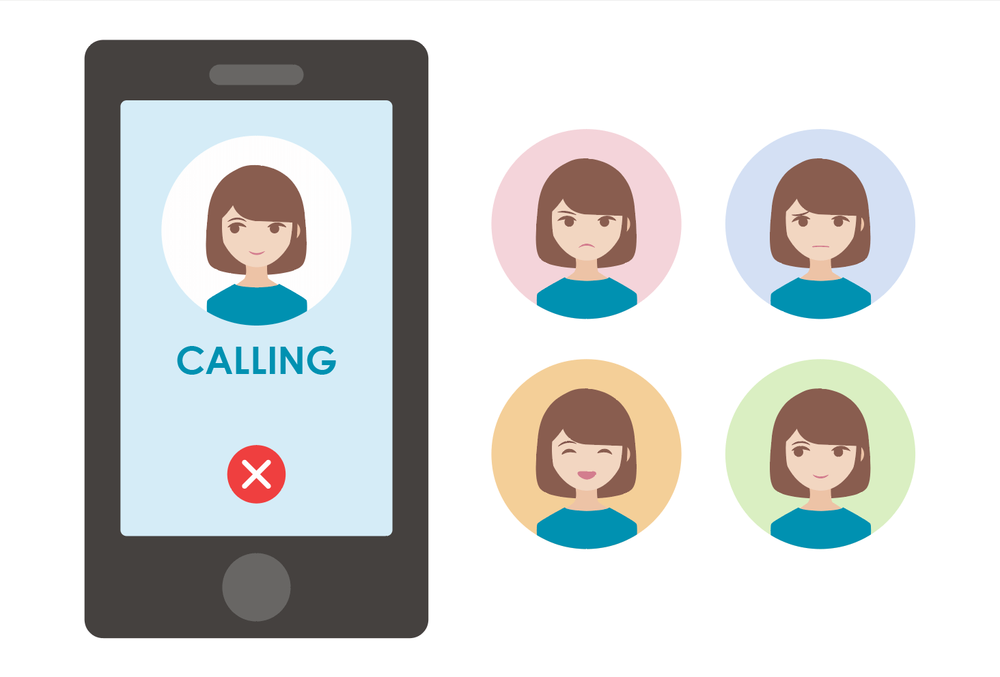
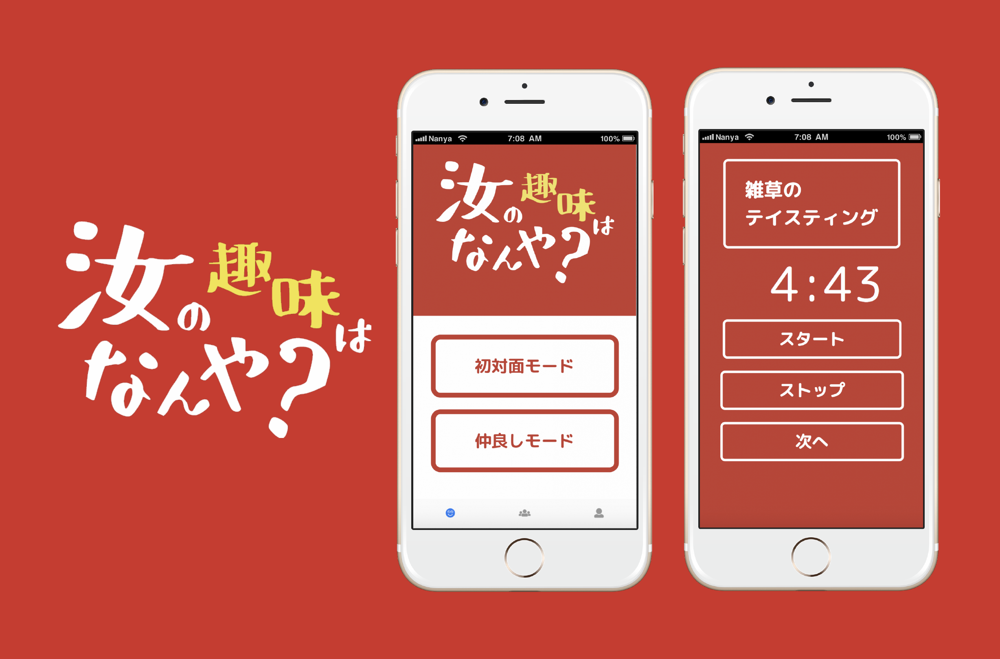
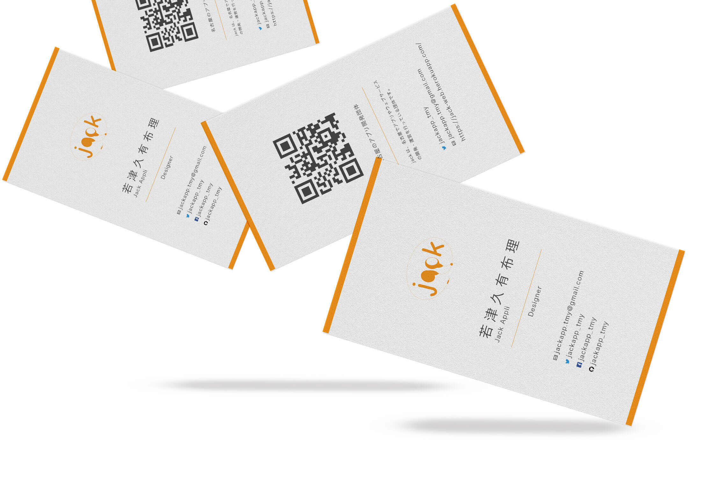
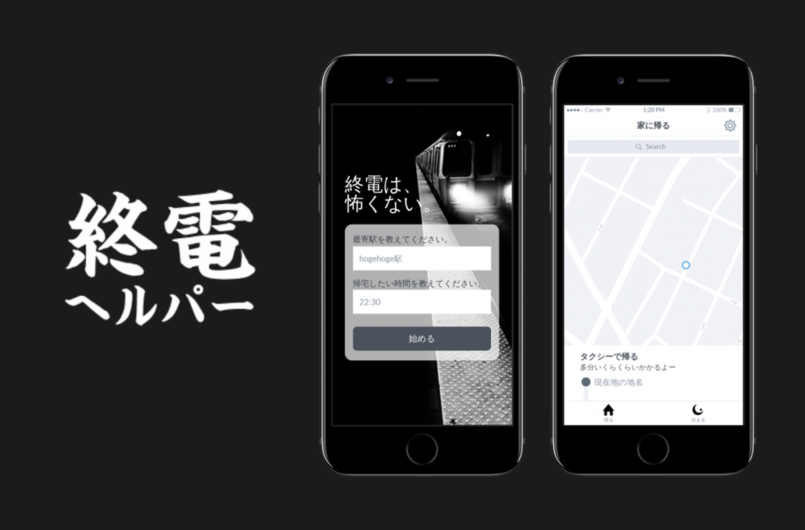
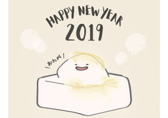
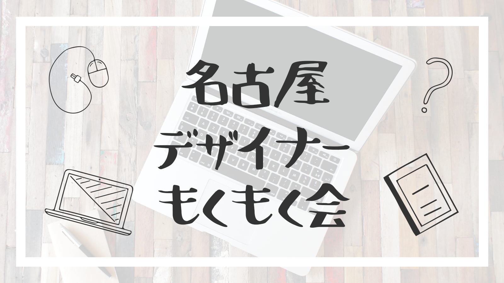
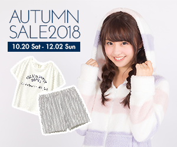

WORKS

ゆでたまごタイマー
料理初心者でも簡単にゆでたまごが作れるタイマーのデザインをしました。ゆでている途中でたまごの状態を確認できることとシンプルでわかりやすいUIが特徴です。プロトタイプ



女の子のイラストアイコン
Illustratorで作成した女の子のイラストアイコンです。シンプルなパーツでも喜怒哀楽の表情が伝わるようにした部分がポイントです。
汝の趣味はなんや?
サークル内のハッカソンで作ったアプリです。リーダーとして全体の企画・制作を担当しました。趣味版の人狼ゲームで、他の人の趣味を当てることで参加者が仲良くなることを目的としたアプリです。

サークルの名刺
私が所属する、アプリ・Webサービス開発団体jackの名刺です。既存のロゴに合わせて使いやすくわかりやすいデザインにしました。表面には個人の情報、裏面には団体の情報が乗っています。

終電を逃したら
終電を逃した時や逃しそうな時に使えるアプリのプロトタイプを考えました。実際に私が終電を逃した時に困ったことや、終電を逃さないようにあったらよかったなと思う機能を盛り込みました。プロトタイプ

年賀状2019
2019年の最初に作った年賀状です。私のあだ名である「きなこ」と正月らしいお餅や風雲のモチーフを散りばめ、年賀状を手に取った人が私からの年賀状だということがひと目でわかるようなデザインにしました年賀状全体

名古屋デザイナーもくもく会
名古屋のデザイナーコミュニティを盛り上げたいという思いから企画したイベントです。改善できる部分が多々あるので、もう少し企画や内容を詰め、運営メンバーを集めた上で来年またやりたいです。イベントレポート
ヘアスタイル共有SNS
Cocoda!の「ヘアスタイル検索アプリ」というお題を元に、「ヘアスタイル共有SNSアプリ」のモックアップを作りました。自分の肌の色や頭の形も一緒に共有・検索できるところがポイントです。ヘアスタイル限定Instagramのようなイメージです。
